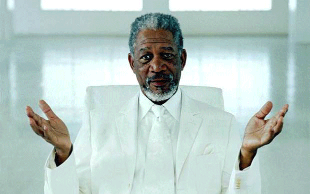
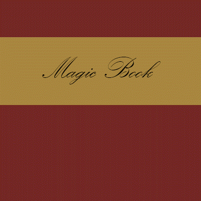

This is Jordan's Gallery Feel free to look @ whatever you want.
My Original Gif
In this project I took several mage spells from Hearthstone and made them into like a spell book. Putting all the colors and motions together in frames to create one fluid action was really challenging, but awesome.

My Original Gif
In this project I took several mage spells from Hearthstone and made them into like a spell book. Putting all the colors and motions together in frames to create one fluid action was really challenging, but awesome.

My Original Gif
In this project I took several mage spells from Hearthstone and made them into like a spell book. Putting all the colors and motions together in frames to create one fluid action was really challenging, but awesome.
My SPRITE
I really enjoyed the sprite project since it created a cool pixeled animation. This was probably my favorite assignment so far.
Reflection
The reflection assignment was cool since you were using exact symmetry to create a mirrored image.
Red Eyes
The red eyes assignment was cool because you see red eyed pictures all the time and now I know one of the tools tom remove that.
 "The man, the legend, JARDON!!!"
"The man, the legend, JARDON!!!"